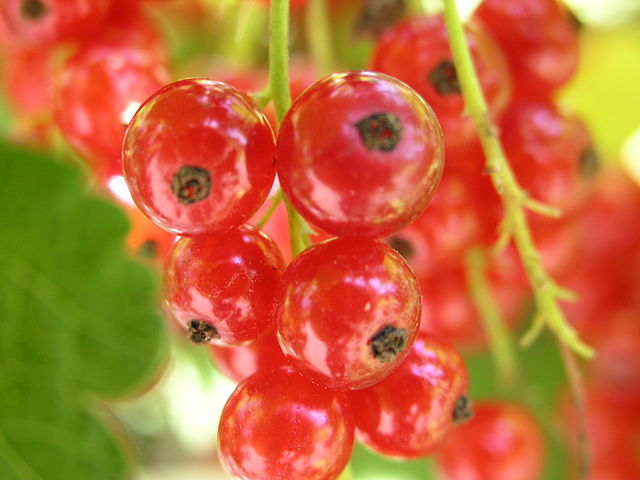

Red currants
With maturity, the tart flavour of redcurrant fruit is slightly greater than its blackcurrant relative, but with the same approximate sweetness.
With maturity, the tart flavour of redcurrant fruit is slightly greater than its blackcurrant relative, but with the same approximate sweetness.